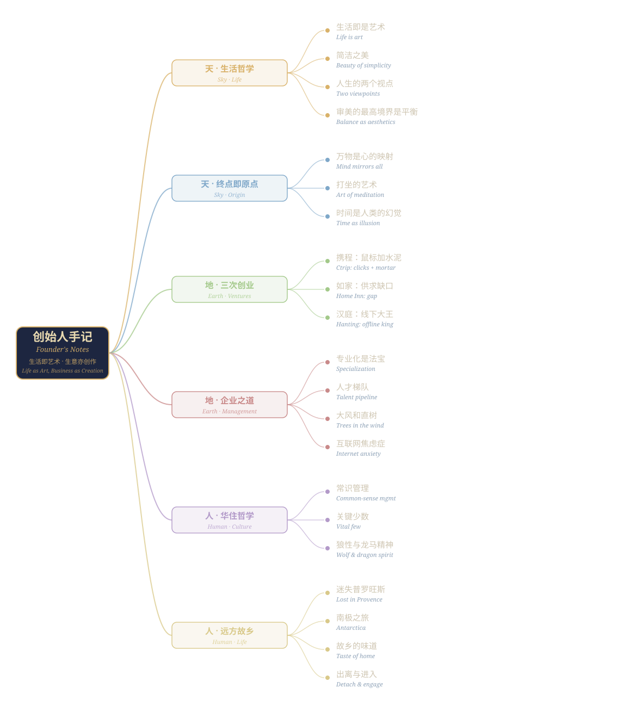

创始人手记
〇 · 书籍信息
基本信息
| 书名 | 《创始人手记：一个企业家的思想、工作和生活》——分三卷：天（生活即艺术）、地（十年创业）、人（远方与故乡） |
|---|---|
| 作者 | 季琦：连续创办携程、如家、汉庭三家公司并先后上市的「创业教父级」人物——中国连锁酒店业的定义者之一 |
| 结构 | 随笔合集，多数篇章附写作日期（2009–2018）：哲学随笔在前、创业复盘居中、生活杂记收尾——一本倒着读的企业家自传：先给世界观，再给生意 |
| 体裁 | 企业家手记：短章、日记体、话题自由——它的独特价值在于把「禅与摩托车维修」式的思考嫁接到连锁酒店这门最接地气的生意上 |
| 一句话 | 他绕了一大圈去寻找艺术，最后发现每个人都是艺术家、每个人的生活都是艺术品——而他的「艺术品」是三千家酒店。 |
一 · 核心主题总览
三卷之间藏着四组母题：① 生活即艺术
开卷立意：「我们要将自己的一生当成一件最独特、最重要、最昂贵、最优美的作品来创作。」企业家手记的罕见起点：把创业降格为艺术创作的一个分支，而不是把生活升格为生意的附属。
② 简洁之美
从数学的「形式美」推到商业：「用最少的资源，达到恰好的功能，并以简单、平实的形式表达出来」——经济型连锁酒店正是这条美学的产品化：去掉大堂、去掉宴请、去掉多余，留一张好床。
③ 生意与钱的次序
「我们几个创始人始终坚信做企业一定要赚钱，光靠点击率和风险投资的钱来维持企业是不靠谱的。」互联网泡沫时代少见的清醒：先盈利模式、后故事——携程 2002 年就实现盈利。
④ 大风与直树
普罗旺斯的季风吹不倒当地的树：根咬得紧、根基扎实、枝干柔韧。他把企业抗周期写成植物学：内功是根、客户是土、浪潮是风——随风起舞，风过挺立。
二 · 第一段 天 · 生活即是艺术—— 简洁 · 两个视点 · 平衡 ——
简洁之美
从解析几何的「美感」讲起：考试题目的正确结果总是简洁、美观的，复杂的结果基本是错的。万有引力与库仑力公式形式趋同，连人与人的吸引力也能写成 C/r² 的样子。「上帝创造万物，只会遵循极少、极简单的几条规则」——于是商业设计也应道法自然：以简洁为美，即「大道至简」。
◆ 语言学习 · 概念 · 形式美
| 形式美 | 数学/物理规律在表达上的简洁对称——作者由它推出商业设计原则 |
|---|---|
| 大道至简 | 老子语，全卷纲领：最少的规则生成最复杂的世界 |
| 多次可导 | 作者借数学词形容自然曲线：流畅、光滑、对称——花木斑纹无一处不规则 |
| 道法自然 | 设计哲学出处《道德经》：组织与产品向自然的简洁看齐 |
句型 ｜ 「用最少的资源，达到恰好的功能，并以简单、平实的形式表达出来」——三段式定义句，正是汉庭产品哲学的语法：少 → 恰 → 平实。
人生的两个视点
二维视点：画一根 X 轴，左端是婴儿的你，右端是临终的你——生命宝贵而短促，让人有敬畏之心。三维视点：沿身体中轴升到太空回望——「经常从太空看自己，你会发现自己的渺小和无意义……这或许会让我们变得谦卑和宽容」；再向内观至量子——「我们是个小宇宙，我们自备佛性」，又让人完满喜悦。一出一进，谦卑与喜悦各得一半。
◆ 语言学习 · 方法 · 视点
| 二维视点 | 时间轴上的自己：生到死的直线——治焦虑 |
|---|---|
| 三维视点 | 空间轴上的自己：太空回望——治傲慢 |
| 内观 | 向内看至细胞与量子——治虚无：小宇宙自足 |
| 敬畏 | 两个视点共同的产出：对时间与宇宙的谦卑 |
习语 ｜ 「日日是好日」——禅语作章节名：好日不是天气好，是心不挑天气；「审美的最高境界是平衡」——作者把审美当方法论用。
三 · 第二段 地 · 十年创业路—— 携程 · 如家 · 汉庭 ——
第一程与第二程
1999 年，四个「不满现状、有些莽撞」的年轻人创办携程：梁建章从美国带回互联网的火种，沈南鹏管金融，范敏懂旅游。模式照搬 Expedia，却在泡沫破灭前坚持「一定要赚钱」，2002 年实现盈利，2003 年逆势上市。如家则是从携程现金流里长出来的：客户抱怨便宜酒店太少、卖得最好的经济型酒店每天只给几间房——供求缺口就是商业计划书。
◆ 语言学习 · 概念 · 连续创业
| 鼠标加水泥 | 互联网+线下执行的混合模式——携程靠它穿越泡沫 |
|---|---|
| 经济型酒店 | 如家的赛道：砍掉星级冗余、标准化复制——当时中国酒店业的市场空白 |
| 盈利模式 | 携程创业期的执念：先找到谁付钱，再谈规模 |
| 团队复用 | 投资人投携程团队再做如家——人是最可靠的资产背书 |
句型 ｜ 「这是四个不满现状、有些莽撞的年轻人被趋势所刺激，还带些理想主义，追逐财富梦想的平常的创业故事。」——长定语句式把传奇拉回人间：创业故事的主语永远是「平常的」。
第三程：汉庭与线下大王
汉庭是三次创业的哲学总结：认定线下体验不可替代——「任何技术的发展，都代替不了线下的实体体验」。面对互联网焦虑，他提出 O2O2O：线下到线上传播、线上回线下体验，做成三角形。「线下大王，就是我们医治互联网焦虑症的良方」——渠道平台做得再大，「餐厅做出美味的菜品」仍是不可让渡的核心价值。
◆ 语言学习 · 概念 · 实体哲学
| O2O2O | offline→online→offline 的三角闭环：传播在线上、体验在线下 |
|---|---|
| 去品牌化 | 互联网渠道沉淀用户后对品牌的稀释效应——传统服务业的隐形对手 |
| 关键少数 | 华住管理词条：对核心人才差异化管理 |
| 常识管理 | 华住未来的管理主张：回到常识，不追逐新词 |
习语 ｜ 「无中生有」——作者对纯线上渠道的评价词：利用过剩服务倒买倒卖，根基不牢；「第三者插足」——品牌直连用户的俏皮说法：移动互联网让酒店不再需要中介。
四 · 第三段 地 · 做好一个企业—— 专业化 · 人才梯队 · 大风直树 ——
专业化的法宝
地卷的管理清单里有几条硬通货：「市场要大，发展要快」「专业化才是企业成功的法宝」「做大与做强是辩证关系」「速度有极限」——他反对把互联网焦虑当病治，主张企业像树：根（内功）扎实、土（客户）咬紧、枝（组织）柔韧。「有焦虑，才会有思考；有思考，才会有突破；有突破，才会有璀璨的未来」——焦虑被重新定义为营养。
◆ 语言学习 · 概念 · 组织
| 志同道合的人才梯队 | 组织建设的目标句：先同志同道合，再谈梯队 |
|---|---|
| 取法乎上 | 管理对标原则：向最高标准学，得其中亦足 |
| 大风和直树 | 作者的自然寓言：抗周期的企业三要素——根紧、基实、枝韧 |
| 速度的极限 | 对规模崇拜的刹车：扩张有物理边界 |
句型 ｜ 「企业像树，市场与客户像泥土。只有紧紧咬住市场，抓住客户，才能在风浪里保持尊严和自我。」——比喻句的三段对应（根/土/风）是全卷最清晰的管理模型。
华住哲学
华住一节几乎是一份企业文化说明书：企业哲学、审美、差异化定位、生意之道、组织之道、如何看待客户与员工，最后落到「常识管理」。其中「狼性和龙马精神」一节最有性格：扩张期要狼性，服务期要龙马精神——一家公司允许两种动物同时存在，是作者对组织张力的诚实。
◆ 语言学习 · 概念 · 文化
| 差异化定位 | 华住的生存策略：不做最便宜也不做最贵，做「恰好」 |
|---|---|
| 常识管理 | 反对管理时尚词，回归朴素的经营常识 |
| 龙马精神 | 服务业的精气神：与狼性并列的第二种组织气质 |
| 关键少数 | 把管理资源集中给决定 80% 结果的少数人 |
习语 ｜ 「日日是好日」再临——把禅宗公案用作经营心态：生意的好坏日，都是修行的道场。
五 · 第四段 人 · 从远方到故乡—— 普罗旺斯 · 南极 · 江南 ——
远方与味觉
人卷的调子松弛：迷失普罗旺斯、南极之旅、选酒心得、吃饭这件小事、故乡的味道、江南情结。一个管着数千家酒店的人，写的却是「我的日常生活好物」——远方与故乡互为表里：走得越远，味觉越诚实。奢侈品一节里他对「贵」的辨析：贵而不奢是审美，奢而不贵是营销。
◆ 语言学习 · 杂记 · 生活
| 出离与进入 | 人卷的哲学轴：既能抽身旁观，又能躬身入局 |
|---|---|
| 信息与能量 | 作者看世界的两个基本量：商业与人生都在处理这两样 |
| 形而上与形而下 | 哲学与日常的分界与贯通——三卷结构正是这条线的展开 |
| 江南情结 | 故乡作为审美原点：所有简洁之美的童年来源 |
句型 ｜ 「如果我们每个人都能像经营企业一样经营自己的人生，像对待艺术品一样对待自己的生活」——地卷与人卷的合流点：管理方法与生活美学在「经营」一词上会师。
大时代与创始人
收尾几篇谈时代与个人：我们的大时代、创始人的边界、商业和友谊、性、婚姻和爱情。他的自我定位罕见地克制：创始人要深度沉浸于产品，但也要接受「时代和传奇创始人」的先后关系——先有时代，才有传奇；先有浪潮，才有冲浪者。
◆ 语言学习 · 杂记 · 自省
| 大时代 | 个人成就的容器：浪潮造英雄，英雄不自造浪潮 |
|---|---|
| 深度沉浸 | 创始人的本职：沉到产品里去，不悬在概念上 |
| 企业和友谊 | 商业关系与私人关系的边界管理 |
| 传奇创始人 | 媒体叙事 vs 真实贡献——作者的祛魅自省 |
习语 ｜ 「取法乎上，仅得其中」——古语作管理原则：目标定在上游，结果才可能落在中游。
六 · 人物图鉴与成长弧线—— 主角配角 · 一张表看穿 ——
主要人物
季琦——叙述者与主角：南通农家出身，上海交大毕业，连续创办携程、如家、汉庭。弧线：诗人气质的创业者 → 连锁酒店帝国缔造者 → 把生意写回哲学的人——三卷正是这条弧线的三段显影
梁建章——携程联合创始人：Oracle 出身、从美国带回互联网火种——技术视角的第一块拼图
沈南鹏——携程联合创始人：金融背景，后来的顶级投资人——资本视角的第一块拼图
范敏——携程联合创始人：旅游业出身——行业视角的第一块拼图：四缺一，模式就不成立
次要人物（功能位）
| IDG | 连续三轮押注季琦团队的投资方：携程、如家、汉庭一气投完——「在疯狂的年代，依然有聪明人和明白人」 |
|---|---|
| 首旅 | 如家的国企合作方：不计较眼前小得失、完全市场化机制——国企胸襟的正面样本 |
| 乔布斯 | 天卷的参照系：简洁之美的现代偶像——作者的审美自证：极简是普适规则，不是苹果专利 |
| 普罗旺斯的树 | 人卷的自然主角：大风中挺立——地卷管理哲学的植物转世 |
七 · 主题与象征—— 每个道具都在说话 ——
| 天/地/人 ↔ 三卷 | 传统三才结构：哲学、生意、生活各占一卷——中国企业家的完整人格拼图 |
|---|---|
| 大树 ↔ 抗周期企业 | 根紧、基实、枝韧：浪潮无法摧毁一个把自己活成植物的组织 |
| 床 ↔ 简洁之美 | 经济型酒店砍到只剩一张好床：「恰好」二字的实体化 |
| 三角 ↔ O2O2O | 线下为底边、线上为顶点：实体体验是不可让渡的根基 |
| 江南 ↔ 审美原点 | 故乡的优雅与奢侈：所有商业美学的童年版本 |
八 · 写作手法赏析—— 怎么写，就能怎么学 ——
① 日记体断章
多数篇章附日期（2009–2018）：把思考过程原样暴露，留时间的年轮
② 比喻迁移
引力公式→人际吸引、树木→企业：跨域类比是他最惯用的思维杠杆
③ 三卷对位
天卷立观念、地卷给证据、人卷做注脚：随笔集做出了论证结构
④ 克制自传
复盘创业不炫功、不诿过：「平常的创业故事」的自我祛魅是全书最成熟的笔触
九 · 名段欣赏—— 原文精读 · 逐段赏析 ——
十 · 金句摘录—— 14 条 · 中英对照 · 带出处 ——
"我们要将自己的一生当成一件最独特、最重要、最昂贵、最优美的作品来创作。"—— 天卷 · 生活即是艺术
"用最少的资源，达到恰好的功能，并以简单、平实的形式表达出来。这，就是简洁之美的规则，所谓「大道至简」。"—— 天卷 · 简洁之美
"上帝创造万物，只会遵循极少、极简单的几条规则，否则就不是万能的上帝了。"—— 天卷 · 简洁之美
"经常从太空看自己，你会发现自己的渺小和无意义……这或许会让我们变得谦卑和宽容。"—— 天卷 · 人生的两个视点
"一切学问的终点是「道」，一切文化归根结底也是「道」。"—— 天卷 · 社会的统一场论
"我们几个创始人，始终坚信做企业一定要赚钱，光靠点击率和风险投资的钱来维持企业是不靠谱的。"—— 地卷 · 第一程：携程
"这是四个不满现状、有些莽撞的年轻人被趋势所刺激，还带些理想主义，追逐财富梦想的平常的创业故事。"—— 地卷 · 第一程：携程
"专业化才是企业成功的法宝。"—— 地卷 目录
"有焦虑，才会有思考；有思考，才会有突破；有突破，才会有璀璨的未来。"—— 地卷 · 互联网焦虑症
"企业像树，市场与客户像泥土。只有紧紧咬住市场，抓住客户，才能在风浪里保持尊严和自我。"—— 地卷 · 大风和直树
"任何技术的发展，都代替不了线下的实体体验。"—— 地卷 · O2O2O
"线下大王，就是我们医治互联网焦虑症的良方。"—— 地卷 · O2O2O
"审美的最高境界是平衡。"—— 天卷 目录
"时间是人类的幻觉。"—— 天卷 目录
十一 · 拓展阅读—— 原文 · 词条 · 译文 ——
十二 · 个人感悟与心得—— 三点心得 ——
三点感悟
① 审美是底层代码
三卷读下来会发现：携程、如家、汉庭的商业模式不同，底层是同一套审美——简洁、平衡、恰好。把美学放在管理学前面，是这个企业家区别于同行的真正原因。
② 平常心写传奇
全书反复把「传奇」降格为「平常」：传奇是结果，平常是方法。对想做事的人，这个祛魅比任何成功学都有用——伟大不需要叙事加冕，需要日常重复。
③ 线下的信仰
在人人喊「互联网颠覆一切」的年代，他押注线下的不可替代性并给出 O2O2O 的结构解。判断潮流需要的不是聪明，是对「什么不会变」的信念——贝佐斯式的提问，在这里以酒店的方式回答。
合上书最记得住的反而是一句闲笔：生活即是艺术——三千家酒店只是这件艺术品里最大的一个局部。
十三 · 一页速查（复习用）
| 三卷结构 | 天（哲学审美）· 地（创业管理）· 人（生活远行）——先世界观后方法论 |
|---|---|
| 简洁之美 | 大道至简：最少资源 → 恰好功能 → 平实表达——经济型酒店的美学地基 |
| 三次创业 | 携程（鼠标+水泥，先盈利）→ 如家（供求缺口）→ 汉庭（线下大王） |
| 抗周期模型 | 大风与直树：根紧（内功）· 土实（客户）· 枝韧（组织弹性） |
| 经营人生 | 像经营企业一样经营自己：审美、纪律与平常心 |
十四 · 全书思维导图—— 一图纵览 ——

一图纵览全书骨架 · 中英双语对照 · 手机端可左右滑动查看全图